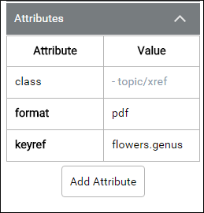

How to Perform Common Editing Tasks
This section describes how to perform some of the most common editing operations in Oxygen XML Web Author. For a more complete list of the editing actions available in Oxygen XML Web Author, see Toolbar, Contextual Menu, and Shortcut Actions.
Editing on Mobile Devices
When you initially open a document on a mobile device, the document is in a read-only review mode. To switch to edit mode, tap the Edit widget (or double-tap anywhere in the editing pane).
Input Text
- Tap or click to move the cursor into the selected document area.
- Type the text using the keyboard or screen.
Split a Paragraph
- Tap or click to move the cursor at the split position.
- Tap or press Enter to open the Content Completion Assistant.
- Choose Split p from the list of proposals.
Enter a New XML Element
- Tap or click to move the cursor into the document area where you want to enter the new element.
- Tap or press Enter to open the Content Completion Assistant.
- Select the element name.
Surround a Selection with an XML Element
- Tap or click to move the cursor into the selected document area and make a text selection.
- Tap or press Enter to open the Content Completion Assistant.
- Select the element name that you want the selection to be surrounded with.
Insert an Image
- Tap or click the
 Insert Image action on the toolbar.
Insert Image action on the toolbar. - Select the image from the file browsing dialog box that appears. If the image does not
already exist in the file structure of your repository, you can use the
Upload
File action at the top-right corner of the dialog box to upload it to the
repository before selecting it.Tip: You can also drag an image file from another document, web page, or application (such as a system file browser) and drop it into your document (in some browsers, you can also use copy/paste actions). Oxygen XML Web Author will insert it as a reference to the image file.
Set an Attribute Value
-
Expand the Attributes pane from the area on the right side of the screen. If not displayed, click the arrow button () on the far right side of the editor.
Figure 1. Web Author Attribute Pane  - If the attribute is present in the attributes table (it already has a value), you can change its value by tapping or clicking its value. On a desktop system, you can also use Tab or Shift+Tab to cycle through the available attributes and the Enter key to select and modify attribute values.
- If the attribute is not present, use the Add Attribute button and tap or click the attribute to set its value. On a desktop system, you can also press Alt + Enter when the cursor is in the document and the focus will change to the Attributes tab with the Add Attribute form control automatically opened.
Remove an Attribute
- Expand the Attributes pane from the are on the right side of the screen. If not displayed, click the arrow button () on the far right side of the editor.
- Find the attribute in the table and tap or click its value.
- Use the Delete button (or use the Delete key) to remove the attribute.
Rename an Element or Delete a Required Element
- Select and right-click the element in the Breadcrumb (or right-click the element in the editor).
- To replace the element with another, select the
 Rename Element
action and select the new element.
Rename Element
action and select the new element. - To delete the element, select the Delete Element (or
 Delete Element
Tags) action.
Delete Element
Tags) action.
Save a Modified XML Document
To save your changes, tap or click the Save button from the upper toolbar. Note that the save operation depends on the integration of Oxygen XML Web Author with a CMS or other storage mechanism.
Edit MathML Equations
- Tap or click the equation to open an editing dialog box.
- Edit the XML source of the equation.
- Tap or click OK to finish the editing process.
Open Image
To open an image in a new browser tab, right-click the image and select Open Image. The new browser tab will contain a preview of the image and from there, you can perform the usual contextual menu actions that are available on images for the particular browser.
Promote/Demote List Item Nodes
- Promote (Shift + Tab)
- Promotes an entirely selected list item node to be a sibling of its parent node (the list item is moved to the left). It also works for selections of multiple list item nodes as long as all the selected nodes are siblings (on the same hierarchical level).
- Demote (Tab)
- Demotes an entirely selected list item node (the list item is moved to the right). It also works for selections of multiple list item nodes as long as all the selected nodes are siblings (on the same hierarchical level).
Display XML Tags
Oxygen XML Web Author includes a Tags Display Mode option that you can use to display the XML tags directly in the document. To access this option, select Preferences from the More drop-down menu. You can choose from the following tag modes: Full Tags with Attributes, Full Tags, Block Tags, Inline Tags, Partial Tags, or No Tags.
Drag/Drop or Copy/Paste Tags, URLs, Images, and Static Text
If the Tags Display Mode option is set to Full Tags with Attributes, Full Tags, Block Tags, or Inline Tags, you can click on a tag, copy (Ctrl + C) it, and paste (Ctrl + V) it within the current document or another document. You can also use the mouse to drag XML tags and drop them within the current document.
If you copy/paste or drag/drop a valid URL string, Oxygen XML Web Author will
automatically insert it as a linking element for the particular document type you are
working with. For example, in DITA it would insert an <xref>
element.
You can drag an image file from another document, web page, or application (such as a system file browser) and drop it into your document (in some browsers, you can also use copy/paste actions). Oxygen XML Web Author will insert it as a reference to the image file.
You can also select a block of text from another document or web page and drag/drop it in the current document (or copy/paste) and Oxygen XML Web Author will insert it as plain text or in some cases, HTML code.
Change Root DITA Map (For DITA Documents)
- With the document opened in Oxygen XML Web Author, select the
 Set the Root Map button on the DITA
toolbar.
Set the Root Map button on the DITA
toolbar. - Choose the URL of the DITA map that you want to be associated with the current document.
- To see which root map is currently associated with a document, expand the Validation side pane. The root map is listed at the top of the side pane.